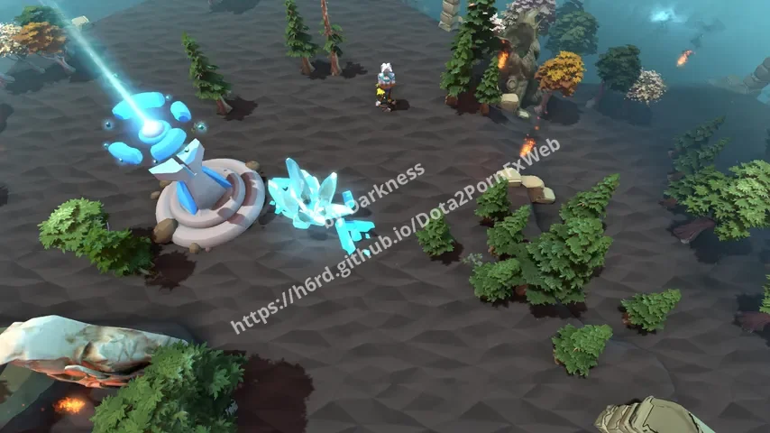
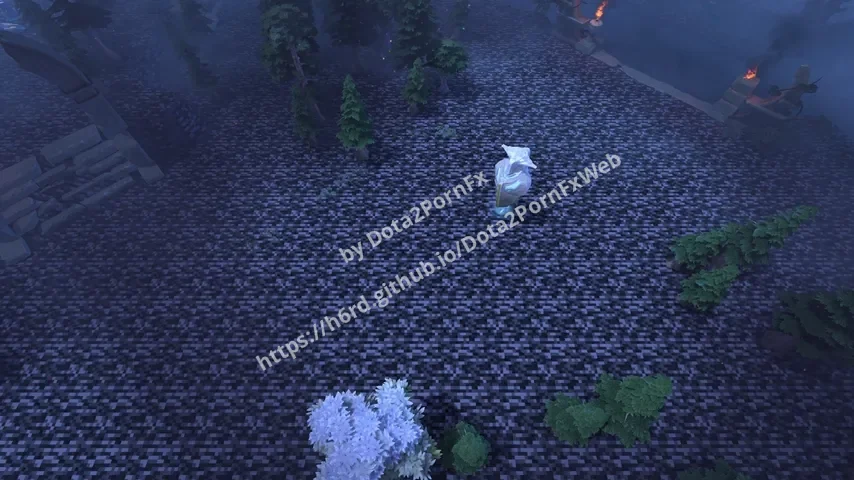
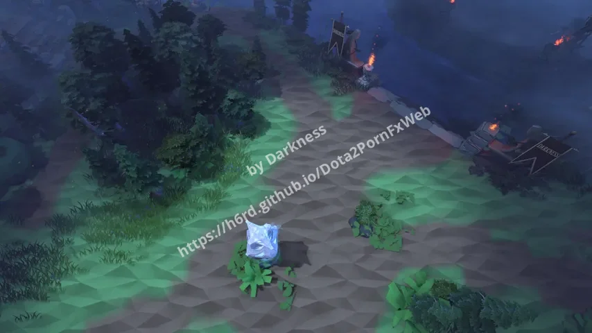
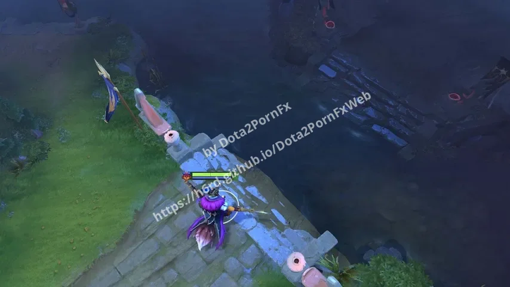
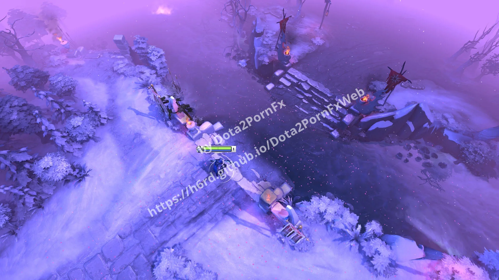
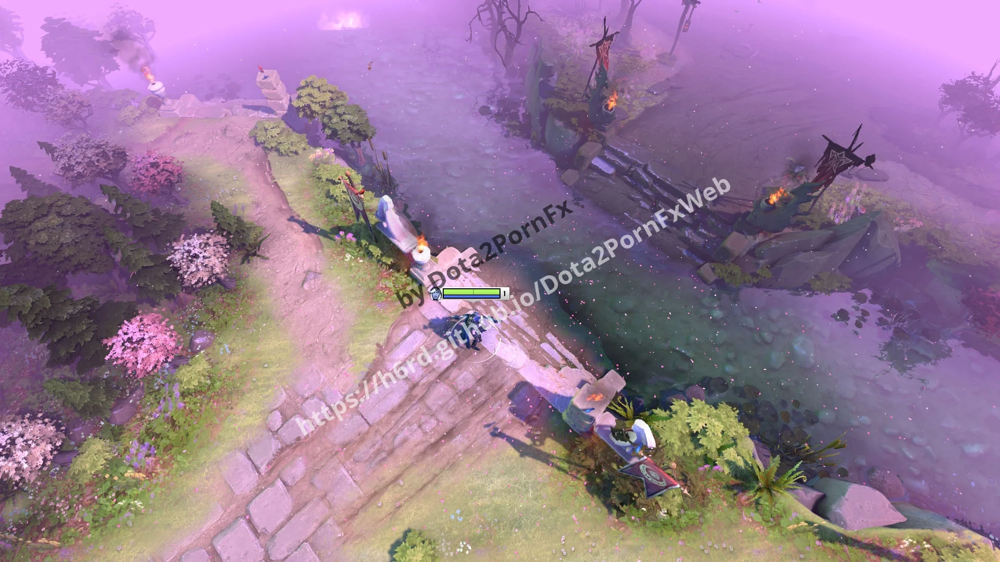
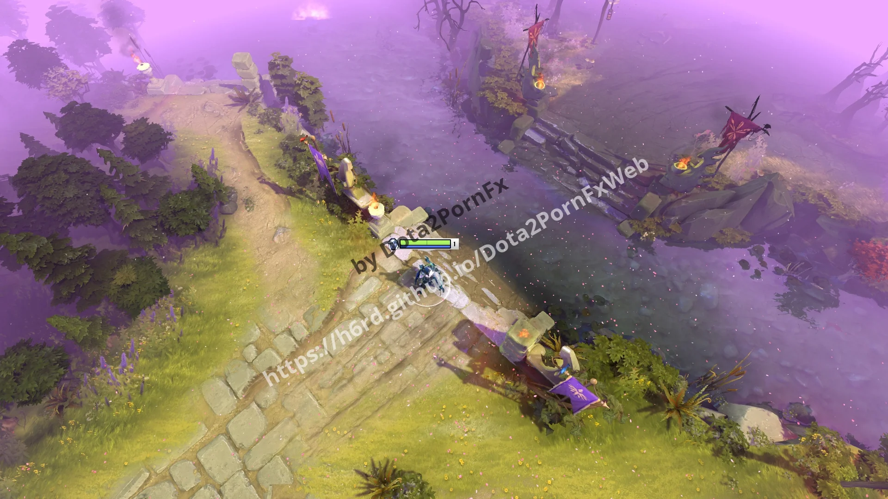
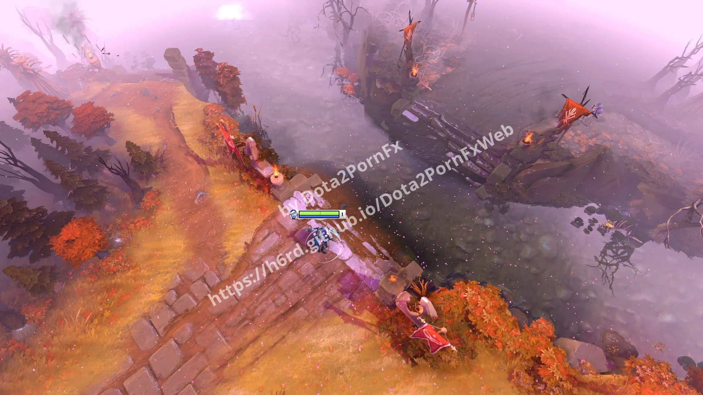

Dota 2 Terrains mods
Terrains modifications.
 DarkPoly & Trees
DarkPoly & Trees
DarkPoly Mossy Cobblestone
Mossy Cobblestone
Bedrock Dark Terrain Minify
Dark Terrain Minify- Simple Dark Terrain Minify
 LowPoly & Trees
LowPoly & Trees
LowPoly TI5 Desert Terrain
TI5 Desert Terrain TI6 Immortal Gardens
TI6 Immortal Gardens TI7 Reefs Edge
TI7 Reefs Edge TI8 Emerald Abyss
TI8 Emerald Abyss TI9 Overgrown Empire
TI9 Overgrown Empire TI10 Sanctum of the Divine
TI10 Sanctum of the Divine The Kings New Journey
The Kings New Journey
Crownfall
Dota+ Winter
Dota+ Spring
Dota+ Summer
Dota+ Autumn